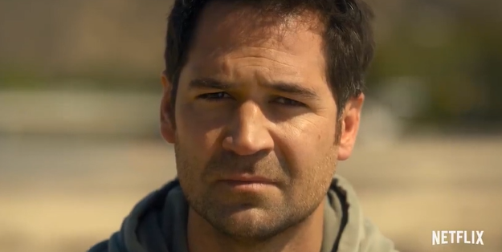
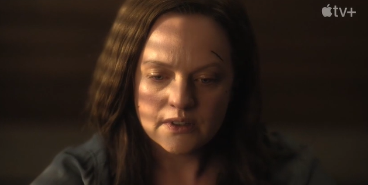
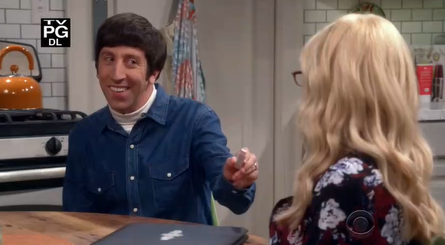

Notícias-séries
O Poder e a Lei: Série de tribunal vai ter 4ª temporada na Netflix? Veja tudo sobre os bastidores da série

Notícias-séries
Esta minissérie mistura suspense e ficção científica para entregar uma investigação enigmática: Apenas 8 episódios

Notícias-personalidades
A verdadeira irmã de Kaley Cuoco aparece nesta cena de The Big Bang Theory, mas quase ninguém sabe disso